ProyectosDestacados
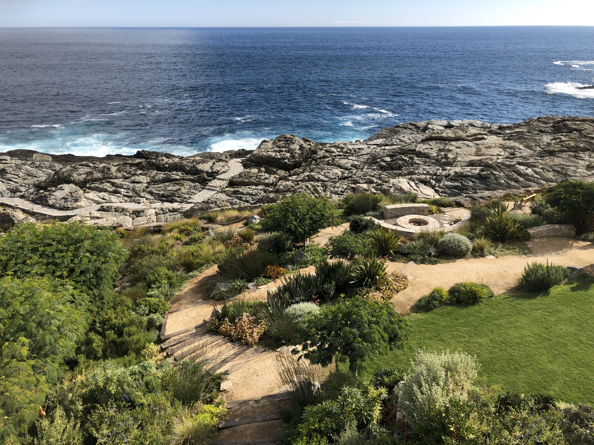
El Pangue CT

Aguas Claras Norte PI

Punta Pite
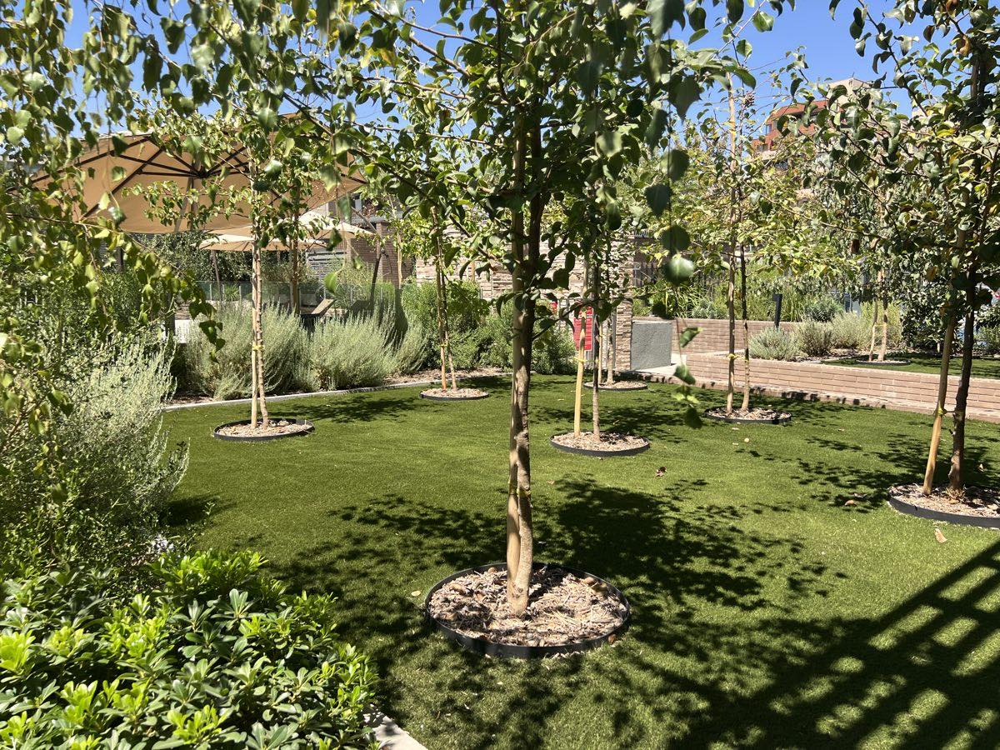
Edificio Hernán Cortés
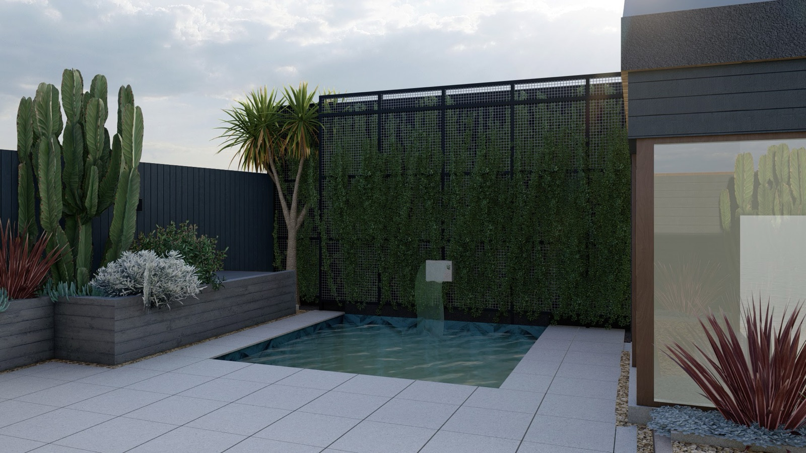
Casa JJ
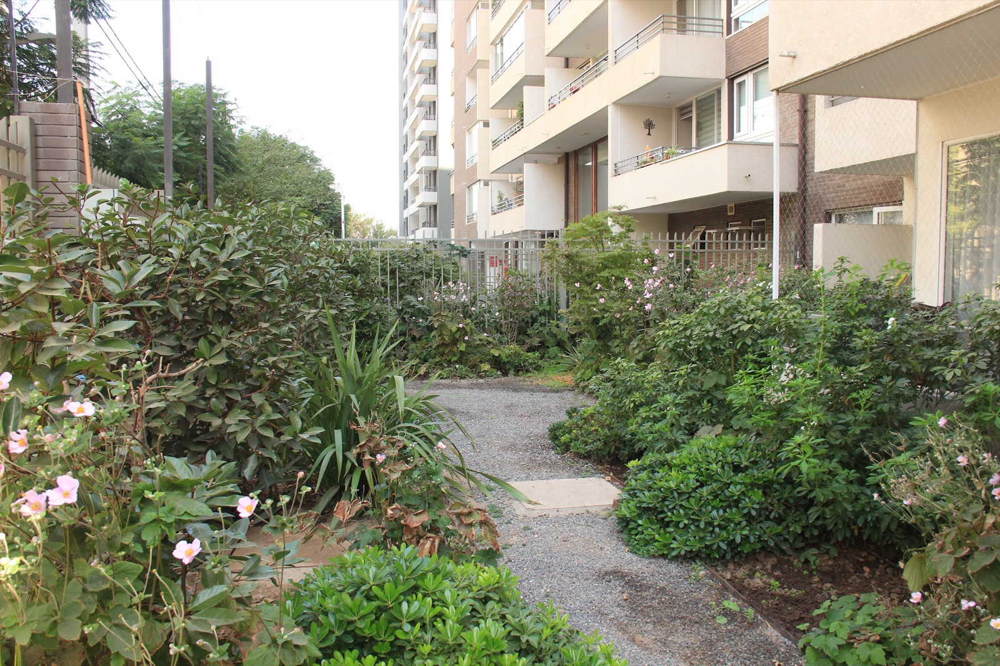
Edificio Los Clarines

El Nocedal
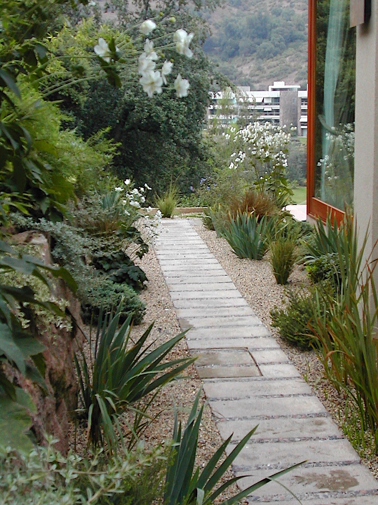
Casa Abaroa

Aguas Claras AP

Marbella CM
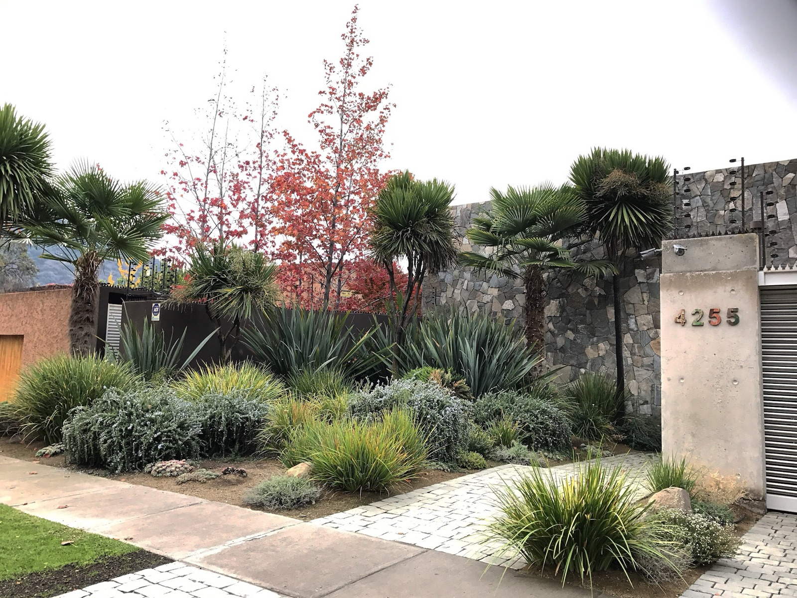
Casa Anwandter
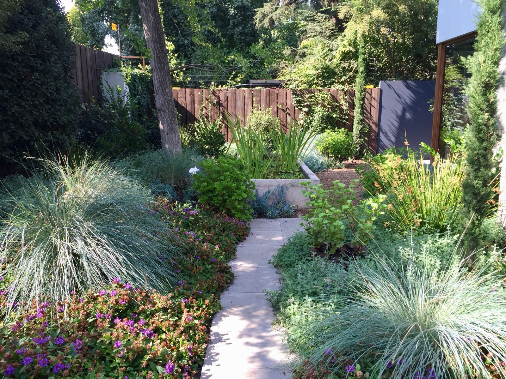
Casa Valdés
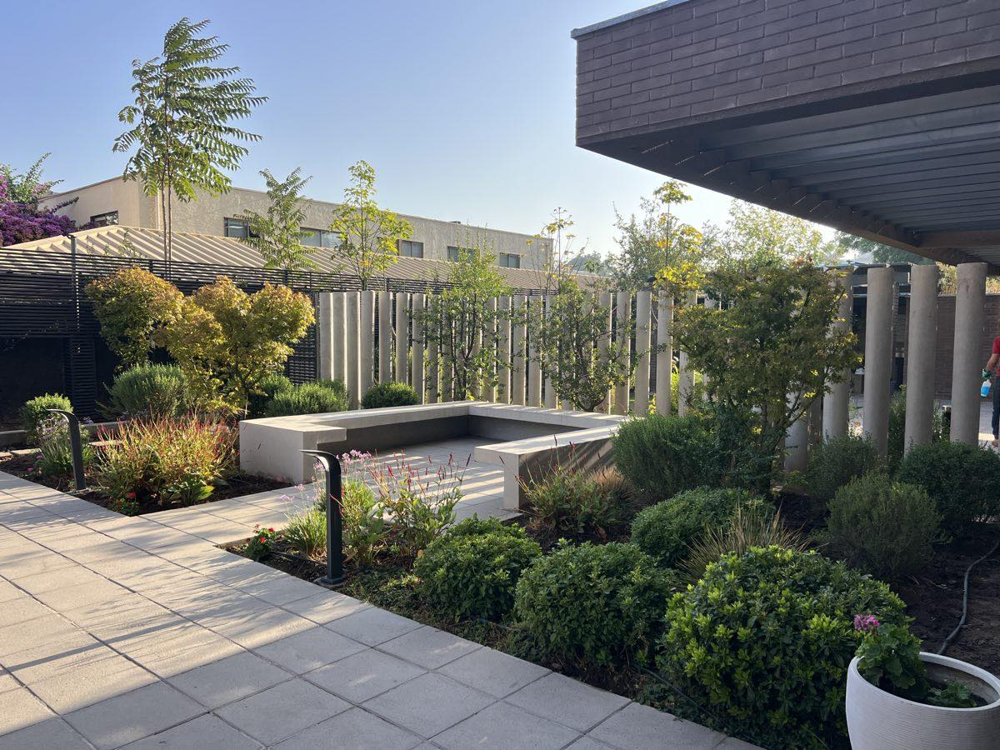
Edificio Manuel Montt

Fundo Aguas Claras LV
Aún no hay proyectos en esta categoría.
20 años transformando lugares a través del paisaje
Archivo
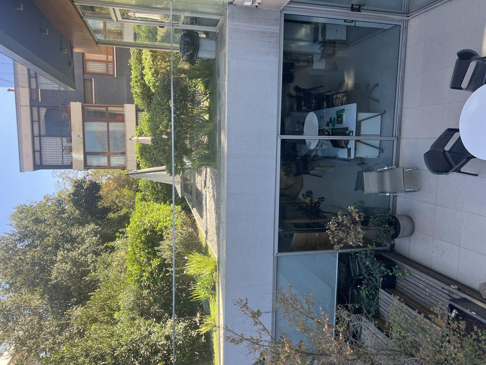
Edificio Francisco de Aguirre
- Año
- 2013
- Lugar
- Santiago
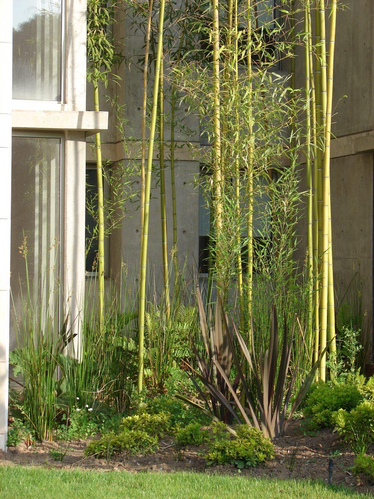
Edificio Dali
- Lugar
- Santiago
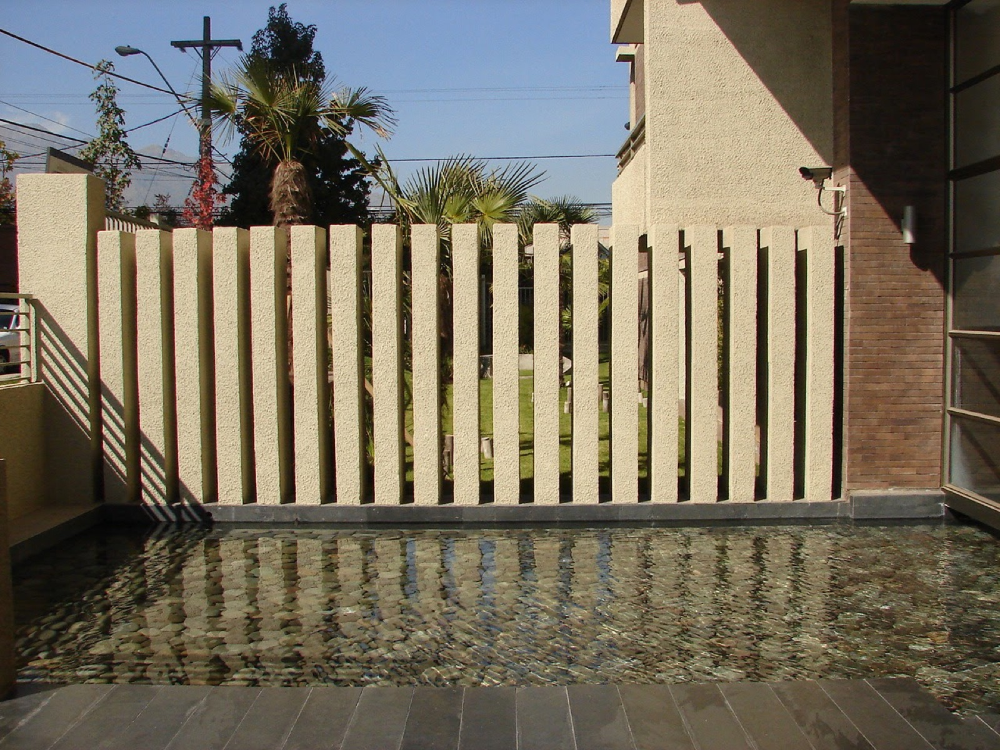
Edificio ERA
- Año
- 2007
- Lugar
- Santiago
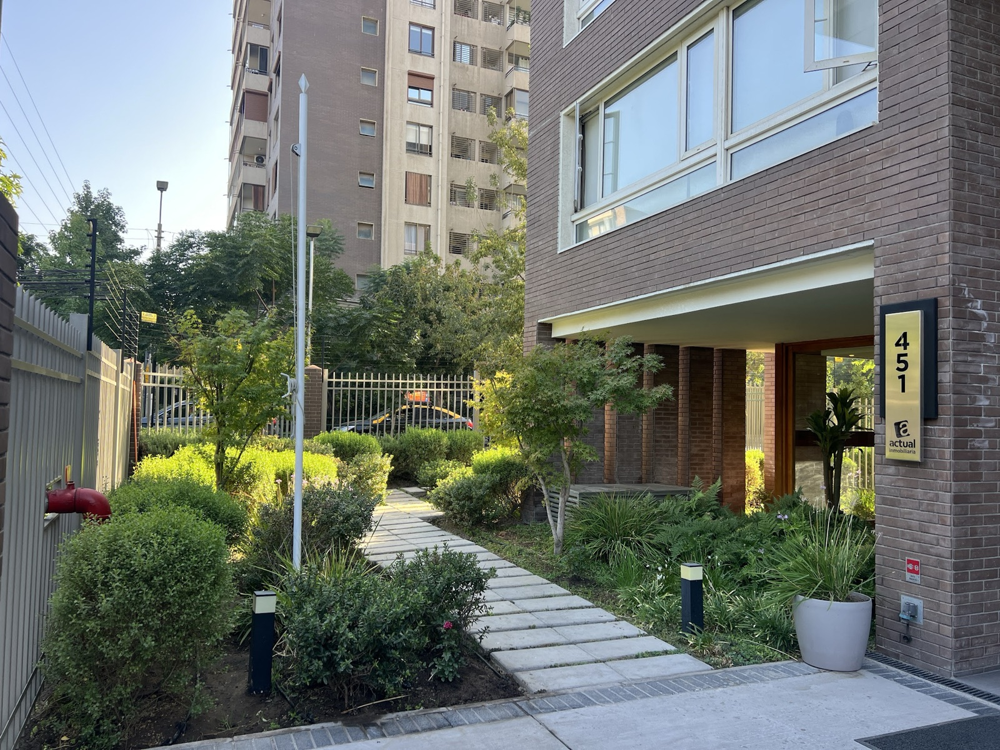
Edificio Campoamor
- Lugar
- Santiago
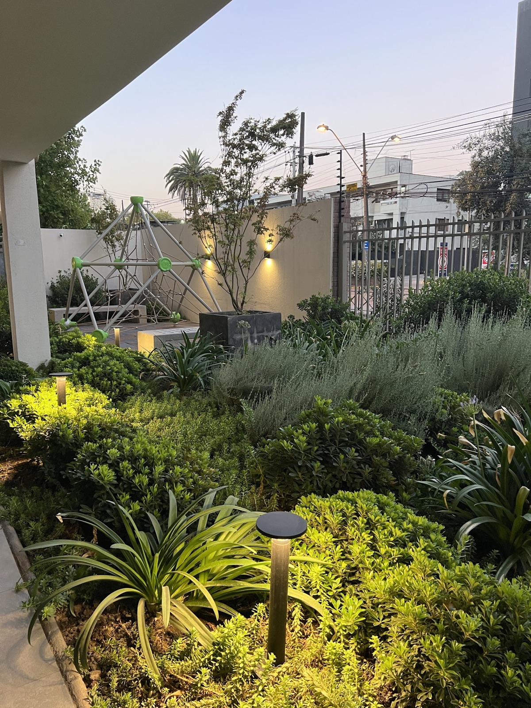
Edificio Sucre
- Lugar
- Santiago
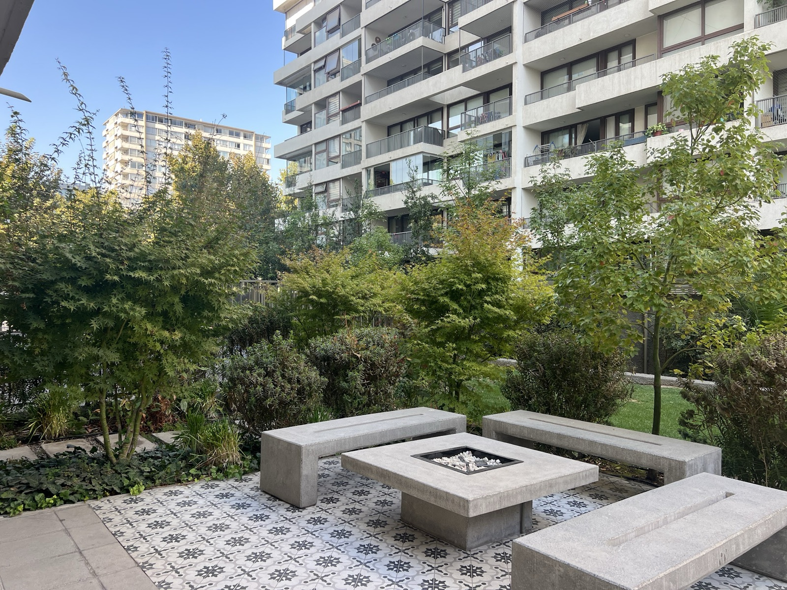
Edificio Pedro de Valdivia
- Lugar
- Santiago